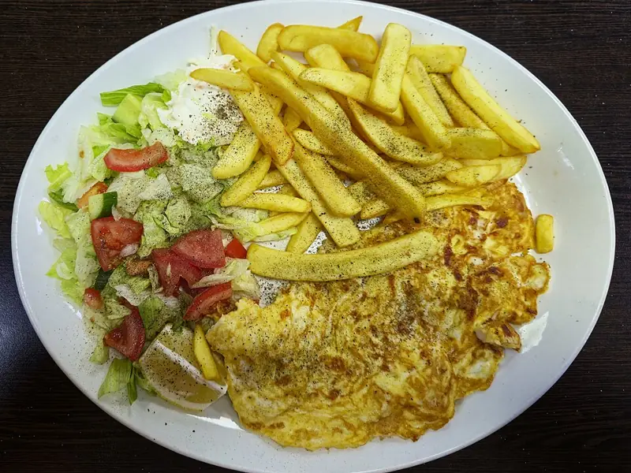

Фото: Acabashi, CC BY-SA 4.0

Омлет с курицей
Омлет с кусочками вчерашней курицы, сыром и зелёным луком
15 мин2 порц.361 ккал на порциюБ 34 · Ж 23 · У 3Интернациональная кухня
Продукты на 2 порц.
- Яйцо куриное4 шт
- Молоко80 мл
- Курица готовая (осталась)150 г
- Сыр твёрдый по желаниюпо вкусу
- Зелёный лук10 г
- Сливочное масло10 г
- Соль3 щеп.
- Перец чёрный молотый1 щеп.
Как готовить
- Нарежьте курицу небольшими кусочками, зелёный лук колечками, сыр натрите.
- Взбейте яйца с молоком, солью и перцем вилкой до однородности.
- Растопите масло на сковороде на среднем огне и прогрейте курицу 2 минуты.
- Залейте яичной смесью, посыпьте луком, накройте крышкой и готовьте на слабом огне 6-7 минут.
- За минуту до готовности посыпьте сыром. Омлет готов, когда верх перестал быть жидким.
Совет. Подойдёт любая готовая курица: отварная, запечённая или из супа. Под крышкой на слабом огне омлет не подгорает снизу.